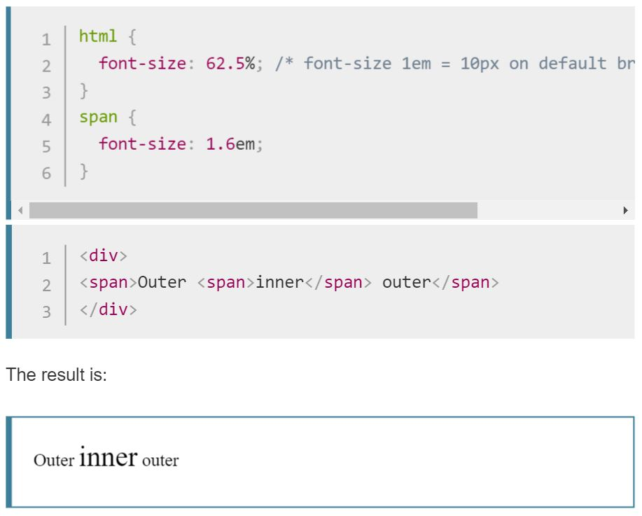

It does matter in the aspect of responsiveness using relative sizes for elements. As their name indicates these size units work relatively to the parent element and root element for em and rem units respectively. In using percentages which are more concerned with the viewport; decreasing the browsers width on desktop, results in scrollable content horizontally and vertically rather than accordingly adjusting to the new browser width.
Compounding is a term found in using ems;  Considering the above html and css in the image the resulting output might seem a bit odd. In the above illustration, it was considered that the root element had a 10px font-sizing. And thus the span element's font size of 1.6em has a relativity concept in both the inner and outer span element. The outer text displayed in the outer span element has a size of 16px; 1.6 x 10 = 16px. And the inner span element's text is of 25.6px; this happened because the inner span element's font-size is 1.6em which is relative to its outer span element's font-size of 1.6em, which is in turn relative to its parent's font size of 10px declared. This certain problem that occurs in using the ems is known as compounding as mentioned earlier and is why rem values where invented in order for elements to stay relative to the root html element not parent element. And thus in assigning values for elements using the rem is more adviced to decrease incompliances and to be effective in issuing changes in the element's font size by changing the root element's size declaration. As a reference for this blog post and in further description please visit the website: https://developer.mozilla.org/en-US/docs/Web/CSS/font-size